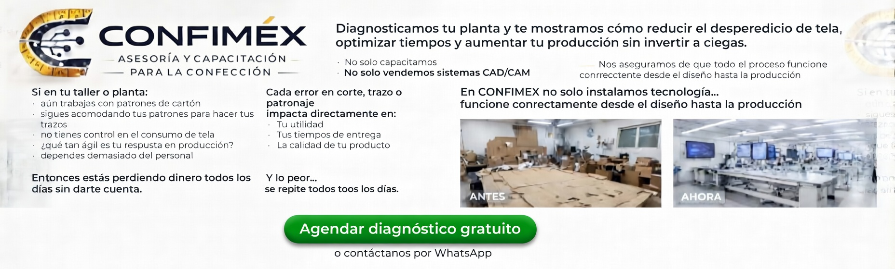

Si esto pasa en tu planta...

- Aún trabajas con patrones de cartón
- Sigues acomodando tus patrones para hacer tus trazos
- No tienes control en el consumo de tela
- Que tan ágil es tu respuesta en producción
- Dependes demasiado del personal
Entonces estás perdiendo dinero todos los días.
En CONFIMEX hacemos que tu producción sea ágil y rentable

No solo vendemos tecnología. Nos aseguramos de que funcione dentro de tu planta.
- Optimizamos tu planta
- Implementamos sistemas funcionales
- Entrenamos a tú personal
- Mejoramos tú producción día a día
- Te damos un acompañamiento continuo
¿Qué incluye el diagnóstico gratuito?

- Análisis de tus procesos
- Evaluación del consumo de tela
- Revisión del flujo de producción
- Identificación de pérdidas
Te mostramos dónde estás perdiendo dinero y cómo solucionarlo.
Más de 40 años en la industria textil
Hemos trabajado con talleres y empresas que buscan mejorar su eficiencia y reducir sus perdidas.